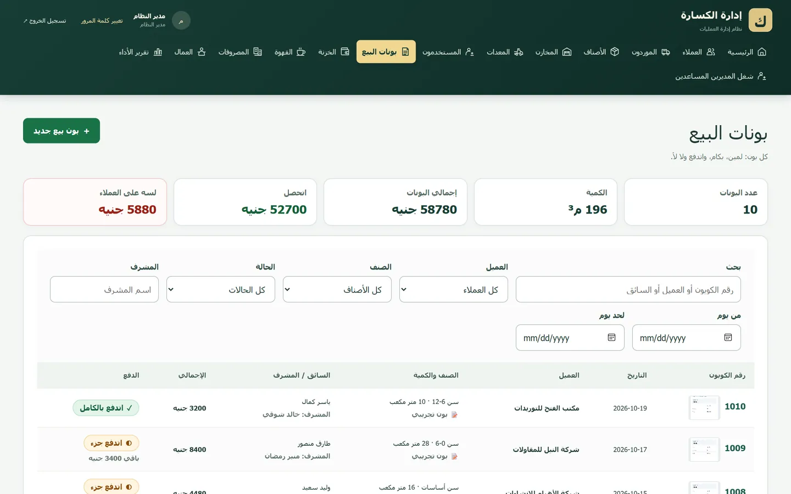
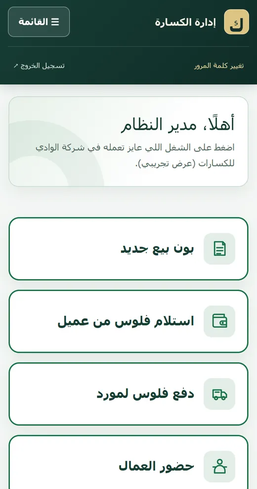

CLIENT WORK / 2026 – NOWSOLE DEVELOPER · LIVE BETA
Crusher ERP
An Arabic (right-to-left) ERP that replaced a stone-crusher company’s Excel sheets. It covers sales vouchers, customer collections, purchasing, treasury, inventory, worker attendance and payroll, and a monthly profit report.
Open the live demoWHAT I BUILT
I designed the database and built the backend and business rules alone, and run it for 5 admin users on a hosted beta. Month closing and an audit log protect past records.
AT A GLANCE12 modules · 25 controllers · 39 migrations · 482 automated tests

